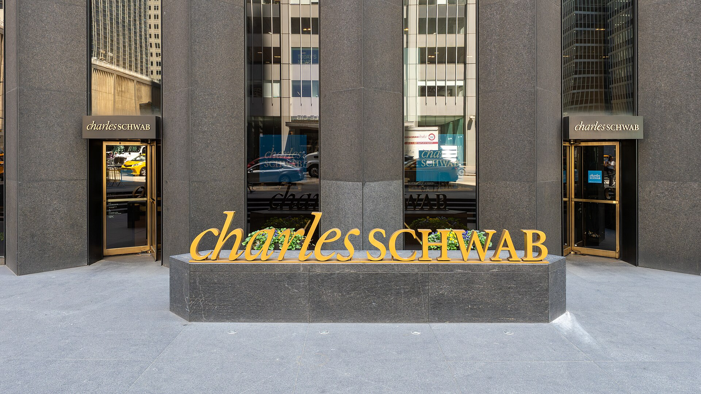
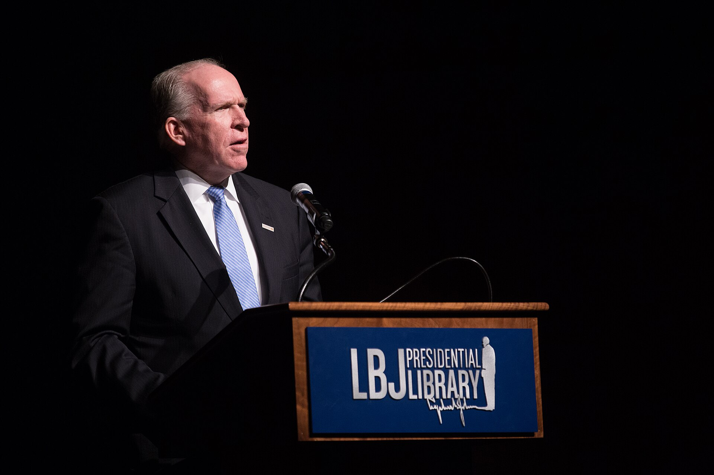

Vol. I · No. 112 · Tuesday, September 15, 2026 · 16 items · ~18 min read
The safety argument became a trade on Monday, splitting the sellers of compute from the buyers, while the ten-year touched five percent into a Fed that decides tomorrow.
Markets & Deals · New York and Washington
The ten-year touched five percent, and the AI complex split in two
The Eccles Building in Washington. The Federal Open Market Committee convened Tuesday and announces Wednesday at 2 p.m. Eastern. — Wikimedia Commons
The ten-year Treasury yield reached 5.012% intraday on Monday, its highest print since October 2023, before retreating to close near 4.96%. The ten-, twenty- and thirty-year points each rose roughly six basis points, leaving the curve at 4.63% in twos, 4.98% in tens and 5.36% in thirties, with the two-to-ten spread near 46 basis points and steepening. Treasury ran only its routine thirteen-week and twenty-six-week bill auctions, announced 10 September and settling 17 September, so there was no coupon to read. The Federal Open Market Committee convened Tuesday and decides Wednesday at 2 p.m. Eastern; CME FedWatch put a 25 basis point hike at 84.1% on Monday and firming toward 92% by Tuesday morning, which would lift the target range from 3.50–3.75% to 3.75–4.00% and be the first increase since July 2023. Brent rose $3.21 to $107.82.
The equity tape split along the line separating who sells compute from who buys it. The fell almost 6%. Nvidia lost 3.36%, about $176.6bn of market value; Broadcom fell 4.77%, Micron 5.6% and SK Hynix 7.4%, with Intel, AMD and Marvell down five to six. The companies buying that silicon went the other way: Alphabet rose about 2%, Microsoft 1.6% and Meta about 1.4%. Palo Alto Networks and CrowdStrike each gained more than 13%. The S&P 500 closed down 0.75% and the Nasdaq Composite down 1.17%; the Nikkei 225 finished at 63,499, off 0.80%.
Gil Luria, who heads technology research at D.A. Davidson, named the mechanism: a slowdown hurts the picks-and-shovels sellers far more than the hyperscalers buying, because “they’ll just all stop building data centers and just digest what they have,” letting revenue rise while capital spending falls. The credit consequence is the part that reaches the curve. AI-linked debt stands at roughly $1.2 trillion, about 14% of the investment-grade market, having passed US banks as the largest sector in the JPMorgan US Liquid index, with street estimates running to $300bn of AI-related high-grade supply this year. on those deals have averaged about twelve basis points against roughly two and a half for the broader market, even at four times oversubscription. The marginal borrower setting the long end is the complex whose own founders spent the weekend arguing the buildout should decelerate.
“IPOs need hype & puffery; ‘we are so awesome it could become dangerous’ is hype & puffery.”
— , on X, September 14
Why it mattersThe market repriced the safety debate as a question about whose capital spending is discretionary, marking hyperscaler capex reversible and supplier revenue non-substitutable. That asymmetry is exactly what governs how a GPU-backed financing or a neocloud credit facility gets underwritten, and it arrived on the day the ten-year touched five percent into a Fed that decides tomorrow.
Law & the Courts · Washington · cross-spectrum LLLCR
The Supreme Court kills the mail-ballot rule for November, 7 to 2, on timing rather than power
The Court denied the government’s application in 26A305, United States Postal Service v. California, on Monday afternoon, leaving Judge ’s 4 September preliminary injunction in place through the midterms. Solicitor General filed a supplemental brief and appendix at 10:44 a.m.; the application was referred from the circuit justice to the full Court and denied the same day. The holds that the government “is unlikely to succeed on the merits of its challenge to the District Court’s preliminary injunction” and that the equities “do not favor a stay.” Justice Alito, joined by Justice Thomas, dissented, arguing the courts were to blame for the case arriving so close to Election Day.
Justice Kavanaugh’s concurrence is the reasoning worth reading. He wrote that there is “at least a fair prospect that the final rule falls within the Postal Service’s statutory authority,” then concluded that applying it to the 2026 elections would be under the Administrative Procedure Act because state and local election officials lack time to implement it. That converts a structural fight over whether a President may regulate state election machinery into a reasonableness holding about the calendar, and it leaves the rule alive to be relitigated on a clean record after November. The usually protects a rule already in force, not a challenger. The procedural sequence is its own tell: Sauer withdrew an earlier application, 26A297, filed 3 September, and refiled rather than amend, after a unanimous First Circuit panel denied a stay on 10 September. More than twenty amicus briefs were lodged, including from Edward Foley, Richard Hasen and Pamela Karlan.
Why it mattersA rule the Court thinks the agency probably had power to issue is dead for this election anyway, because it arrived too late for the officials who would have to run it. Timing did what vires could not, and the government keeps its argument intact for 2028.
Framing noteTownhall headlined it “The Supreme Court Just Ruled Against Election Security”; the New York Times framed the same order as the Court blocking a plan to screen mail-in ballots weeks before the midterms; the Wall Street Journal wrote that the decision avoids a chaotic scramble to implement new rules before November.
Morgan & Morgan puts $1 billion behind AI and names hourly Big Law as what it replaces
Morgan & Morgan, the largest plaintiff firm in the United States, said Monday it will commit at least $1 billion to legal technology and artificial intelligence over ten years, and unveiled MX2, its in-house platform. The firm has already spent roughly $300 million over five years; against revenue Reuters put at $2.4 billion in June, $100 million a year is about four percent of the top line. MX2 runs four products: Agent, for case insights and agentic workflows, embedded in ; First Draft, for case-aware drafting inside Microsoft Office; Medical, for record extraction and ; and Search. The firm reports 5,000 monthly active internal users and more than two million Agent interactions, and will open MX2 to other firms by invitation toward the end of 2027, prioritising corporate, transactional and litigation practices.
Co-founder was explicit about the target: “Firms which bill by the hour to draft and review agreements or read through thousands of pages of documents, are the practices AI will replace almost entirely. That’s white shoe, Big Law territory.” The asymmetry underneath is structural. On , hours spent on intake, records retrieval and chronology work are cost that cannot be billed to anyone, so every hour removed falls to margin; the billable hour makes the identical efficiency gain revenue-destructive. That is how a personal-injury shop outspends Kirkland & Ellis’s reported $500 million commitment two to one. Reuters reported in June that the firm has explored an outside stake sale and an eventual listing, which reframes MX2 as an asset built toward a valuation event, and as a plaintiff firm becoming a vendor to the defence bar.
Why it mattersThe most aggressive AI spend in American law is coming from the side of the bar that does not bill by the hour, and it is aimed at the side that does. Latham & Watkins posted seven AI roles this week at up to $400,000, among them a Legal Engineering Attorney hired to render partner judgment as prompts, schemas and . Both firms are answering the same question about where a junior transactional lawyer’s work goes.
Two regulated professions get the same product on the same Monday, and Congress starts drafting the liability.
AI · San Francisco
Anthropic wires Claude into Schwab, BlackRock and Vanguard, and stops one step short of the regulated act

A Charles Schwab office in New York. Schwab Advisor Services is one of eleven custodial and planning platforms Anthropic connected to Claude on Monday. — Wikimedia Commons / Ajay Suresh
Anthropic released Claude for Financial Advisors on Monday, bundling eleven new connectors with eight workflow skills. The connectors reach , BlackRock through Advisor Center, Charles Schwab Advisor Services for balances, positions, transactions, and money-movement status, Envestnet, iCapital, Orion with Redtail, SS&C Black Diamond, Wealthbox, Wealth.com, Vanguard and Zocks, alongside existing links to FactSet, S&P Global and Morningstar. The skills cover onboarding, alternatives and estate-and-tax briefs, rebalance review, pre- and post-meeting work, prospect intake, and a compliance skill that screens client-facing language against the . Launch customers include Ritholtz Wealth Management, Mercer Advisors, Rockefeller and Dynasty Financial Partners; Addepar’s Eric Poirier says the platform underlies nearly $10 trillion in assets.
The design choice that matters is the liability perimeter. Anthropic states that “investment recommendations, client communications, compliance determinations, and other regulated activities remain subject to human review and approval,” and the product stages CRM writes and draft client emails rather than sending them. It recommends Enterprise plans for specifically because Enterprise carries the audit logs that support recordkeeping, which is a books-and-records answer dressed as a pricing tier. The competitive shape is worth naming too. OpenAI’s financial-services product, introduced days earlier, went at the sell side, at bankers and equity research; Anthropic went at the buy side and the adviser channel. Vanguard and BlackRock appearing as connector partners means both are pushing model-portfolio intellectual property into a third-party inference layer.
Why it mattersMichael Batnick of Ritholtz put the economics plainly: “The math on this business is hours, not headcount: an advisor has a finite number of them, and most were going to prep and paperwork instead of the people who actually pay us.” Read next to Morgan & Morgan on the same day, two regulated professions made the identical argument about where the unbillable hours go, and both routed it through software that halts before the act a regulator would review.
A bipartisan AI bill would write a duty of care into statute, and may let Washington block a release
Senate Majority Leader John Thune said Monday he expects a bipartisan AI bill soon and wants Congress to legislate with a “light touch.” The vehicle is a revision of a Thune-Klobuchar framework first introduced in 2023, now joined by Ted Cruz as chairman of the . The core mechanism is a statutory obliging developers to design against catastrophic risk; Cruz has said he is drafting language on “catastrophic risks involving biological or nuclear threats.” Negotiators are also debating whether the federal government should be able to block release of a model deemed unsafe, and whether that authority should run through the federal courts. An earlier attempt stalled over safety-testing language, and Congress has still passed no comprehensive AI statute.
A duty of care is a tort import rather than a licensing regime. It does not tell a developer what to build; it creates a standard against which a court measures conduct after harm, and it manufactures a cause of action where none clearly existed, which is why it can be sold as light-touch while being the most consequential option on the table. Scope then gets set by litigation rather than by statute. The pre-release blocking authority is the harder question, because a government power to enjoin publication of model weights raises a problem, and probably why negotiators are discussing Article III courts rather than an agency. made the opposing case the same day: that there is “no AI exemption from laws already on the books,” that existing consumer-protection authority already reaches releasing untested products, and that some state attorneys general are exploring criminal liability for executives.
Why it mattersNew duty against existing enforcement is the actual fight of the next two years, and both sides staked it out on the same Monday. A statutory duty of care would put AI harm on the negligence track, where discovery, expert testimony and jury standards do the defining, and where a company’s own safety statements become evidence of what it knew.
Framing noteThe Daily Caller ran it as industry capture of a disinterested Washington: “Tech Giants Want Swamp To Slow Down AI Race, But It Doesn’t Seem All That Interested.” HuffPost ran the same week as a belated awakening: “Congress Is Starting To Argue About A Potential AI Apocalypse.”
A family office with no exit clock, a coupon of zero, and a merger suit settled in five days.
Markets & Deals · Tampa
Michael Dell’s family office takes Baldwin private at $7.7 billion, an 88% premium
Downtown Tampa, where The Baldwin Group is headquartered. The insurance brokerage agreed Monday to go private at $32.50 a share. — Wikimedia Commons
The Baldwin Group signed a definitive merger agreement Monday to be taken private by an entity formed by Sequence Holdings and , Michael Dell’s family office. The consideration is all cash at $32.50 a share, about $7.7 billion of total value, comprising roughly $4.6 billion of equity and $3.1 billion of net debt assumed or refinanced. The premium runs about 88% to the of 17 June, an unusually distant reference date, meaning the market carried leak-driven value for nearly three months. Class B shares are cancelled, eligible employees roll a portion and keep a significant minority stake, and the target close is the first quarter of 2027. It is the largest announced transaction by enterprise value inside the window.
The signature page is the part to read. Baldwin ran and MarshBerry with Davis Polk & Wardwell, plus Troutman Pepper Locke on insurance regulatory. The special committee retained its own independent banker in Perella Weinberg and its own independent Delaware counsel in , which is the textbook MFW posture, the architecture that buys business-judgment review instead of entire fairness where an insider-affiliated buyer sits across the table. The buyside brought Piper Sandler as lead, Moelis as sole capital markets adviser, Morgan Stanley, Barclays and Wells Fargo, with Latham & Watkins for Sequence and Sullivan & Cromwell for DFO. Dell’s own framing: “DFO invests with the flexibility and patience of permanent capital, not as a fund working against a fixed exit clock.”
Why it mattersBaldwin says it is going private to move faster on AI, which is the thesis a brokerage reaches for when it does not expect public markets to fund a rebuild. A family office with no fund life is now competing with sponsors for control of public companies, and it brought five banks to finance this one. gets an exit; the committee gets a record it may have to defend.
PBF sold zero-coupon paper into a five-percent ten-year to retire 7.875% debt
priced $500 million of 0% due 2032 after Monday’s close, with the initial exchange price set at a 37.5% to the day’s NYSE close of $70.40. It bought with an initial cap of $123.20, a 75% premium to the same reference. Net proceeds of about $485 million, $25.2 million of which funds the capped calls, plus cash on hand, repay or redeem all outstanding 7.875% senior unsecured notes due 2030. Underwriters hold a thirty-day option for up to $150 million more, and closing is expected 17 September.
This is the cleanest available illustration of what a five-percent ten-year does to a treasurer’s arithmetic. PBF retired cash-pay debt at 7.875% with a coupon of literally zero, and paid for it in optionality: noteholders take the equity above $96.80, the company buys that back to $123.20 for $25.2 million, roughly five basis points of annualised cost across six years against the coupon saved. The offering is made by a subsidiary issuer and exchanges into parent stock, which keeps the debt at an operating entity while the equity linkage sits at PBF Energy Inc. When the long end reprices this violently, the convert desk becomes the cheapest financing window on the Street.
Why it mattersEvery borrower reading Monday’s curve faces the same trade, and the answer is equity-linked supply. Expect the convert calendar to absorb what the high-grade market will not price at these levels, which is where a refinancing wall meets the shape of the yield curve.
Bio-Techne bought off a merger suit with supplemental disclosures nine days before the vote
Bio-Techne filed a on Monday carrying supplemental disclosures to the proxy for its merger with . The deal was signed 25 June at $73.00 a share in cash, about $11.3 billion of enterprise value, structured through EMD Holdings NewCo with a merger sub folding into Bio-Techne. The definitive proxy went out 20 August and the special meeting is 23 September. The trigger was a single suit, Robert Garfield v. Baumgartner, filed 9 September in the Fourth Judicial District of Minnesota, alleging the proxy misrepresented or omitted material information and seeking to enjoin the vote. The company also received multiple demand letters on proxy adequacy.
This is the disclosure-only merger-objection machine, filed in Minnesota rather than Delaware because the Court of Chancery spent a decade making it unprofitable there. Under , Delaware will not approve a disclosure-only settlement absent plainly material supplemental disclosures, and the Seventh Circuit took the same line federally in Walgreen, so the practice migrated to state courts and to demands a judge never sees. The sequence here is the standard one, compressed: complaint 9 September, supplement 14 September, vote 23 September. The plaintiff’s surname recurs across an extraordinary number of merger-objection captions nationally, which is the tell that this is a toll on deal timelines rather than a disclosure dispute.
Why it mattersThe supplement is the actual work product of a capital markets summer. Somebody redlined the projections and banker-relationships sections of that proxy until the complaint was moot, inside five days, against a vote that could not move.
A single-judge division in Fort Pierce, and a corporate chair’s veto that cost a firm seven partners.
Law & the Courts · Fort Pierce · South Florida · cross-spectrum LLCR
The prosecutor quit on Thursday. He had signed the Brennan subpoena on Wednesday.

John O. Brennan, CIA director from 2013 to 2017. His testimony before a Fort Pierce grand jury is preliminarily set for 15 October. — Wikimedia Commons / Central Intelligence Agency
, 81, tapped in April to run the “grand conspiracy” probe out of the US Attorney’s Office for the Southern District of Florida, resigned by letter at 3 p.m. on Thursday 10 September. Court filings and Brennan’s counsel disclosed Monday that diGenova had signed a grand jury subpoena to the former CIA director on Wednesday 9 September, the day before he quit, with testimony preliminarily set for 15 October. The filings reveal two investigations rather than one: a far-reaching conspiracy probe covering “issues at Mar-a-Lago and beyond,” and a narrower matter on Brennan’s 2023 sworn congressional testimony about Russian interference in 2016. James Comey has been subpoenaed in the same probe. diGenova’s parting line was blunt: “If you want indictments where there’s no evidence, you have an ethical problem.”
The venue is the story. The grand jury sits in the , about 120 miles from the Miami courthouse that carries the bulk of the district’s criminal docket, and is the division’s sole district judge. Every motion to quash, every fight and any eventual indictment therefore lands before one judge by operation of geography rather than random assignment. Brennan’s attorney called it “a pretty unprecedented example of judge shopping.” The second tell is the timing: a prosecutor who had lost the department’s confidence signed compulsory process the day before resigning, so the investigation now proceeds under someone who did not authorise it.
Why it mattersThe Judicial Conference’s March 2024 guidance urging district-wide random assignment addressed civil filings seeking nationwide relief and left single-judge criminal divisions untouched. Fort Pierce is what that gap looks like once a prosecutor uses it deliberately, and it is happening in the district where a Miami-trained lawyer will spend a career.
Framing noteRedState ran it as overdue accountability, headlined “Answer the Questions: DOJ Subpoenas John Brennan.” The Washington Post and NBC News led instead on the resignation-then-subpoena sequence and the judge-shopping allegation. The two sides report different facts as the lede.
Cravath made its largest group hire ever, and Weil partners went on background to say good riddance
, Weil Gotshal’s corporate chair, moved to Cravath, Swaine & Moore with roughly half a dozen M&A partners, which David Lat characterises as the largest group hire in Cravath’s history. Weil’s own announcement described Cravath as “a smaller platform.” On Monday Bloomberg Law reported that Weil partners feel “something closer to relief,” and that Aiello “was a divisive presence who stalled progress in the new directions Weil needed to go.” His compensation was reportedly north of $20 million a year, against firm revenue of $2 billion.
The concrete grievance is a geography veto. Aiello’s longtime deputy Sachin Kohli asked his blessing to move to California and build a West Coast public-company M&A practice, and Aiello reportedly called the idea “disloyal”; Kohli left for earlier this year. In a second instance Aiello raised concerns about hiring an M&A partner from a top rival over colleagues’ enthusiasm, and that partner went to a competitor which has since taken several more Weil lawyers. The story is less the lateral than the breach of the departure-statement convention, which permits two moves: wish them well, or say nothing. Weil skipped both, twice, on the record of a background briefing.
Why it mattersA corporate-department chair’s authority is mostly unwritten and runs on rather than firm bylaws. This is what it buys: a deputy needed his chair’s permission to open a coast and did not get it, and that single veto eventually cost Weil the whole group. The that gives the acquiring firm its name once made a hire like this unthinkable.
A forty-times move in war-risk cover, a second legal basis stacked onto an old sanction, and a truce nobody in Kyiv had heard of.
The World · Dubai · cross-spectrum LLL
Washington says Hormuz is clearing. Insurers are pricing one transit at up to $10 million.
The Strait of Hormuz. Reuters ship tracking counted fourteen transits across the weekend, against a pre-war baseline above a hundred vessels a day. — Wikimedia Commons / NASA
Brent rose $3.21 to $107.82 on Monday and West Texas Intermediate $3.17 to $103.22, after an Iranian ship was attacked in the strait on Sunday and the Saudi East-West pipeline was damaged. Energy Secretary said ten million barrels a day had moved through Hormuz on average over the past week and that flows were “back to two-thirds or north of two-thirds of the previous” level. Reuters preliminary ship tracking counted fourteen vessels transiting across the entire weekend, four exiting the Gulf and ten entering, against a ten-day average of fourteen per day and a pre-war baseline above a hundred vessels daily carrying about twenty million barrels. Some ships transit with transponders off and are excluded from the count. The Revolutionary Guard said Monday it destroyed an MQ-1 drone over the strait.
The number nobody is running is the insurance. Abdul Khalique, who heads the Maritime Centre at Liverpool John Moores University, told Al Jazeera that for a Hormuz transit ran about 0.25% of hull value before the war and now runs three to ten percent: “For a $100m tanker, that range translates to a war risk premium of $3m to $10m for a single transit, before cargo cover and freight costs are added on top.” That is a fortyfold repricing, and it is a market measurement rather than an opinion. Chris Beauchamp of IG Group stated the gap plainly: “Despite US claims to the contrary, Hormuz is not under its control, and oil is not flowing freely.” Iran said Monday that Saudi Arabia, not Oman, postponed the Salalah meeting, over events in Yemen.
Why it mattersMilitary control of a waterway and commercial viability of a route are different things, and the premium is where the difference gets priced. A forty-times move in war-risk cover reaches charter economics, trade finance and every commodity-linked credit facility long before it reaches a headline about flows. Watch the rather than the spot print.
Treasury designates VTB under Iran authorities, and the target is everyone still clearing it
designated VTB Bank on Monday for operating in the financial sector of the Iranian economy, under Operation Economic Outcast, the campaign Treasury Secretary announced in August. Treasury alleges the bank built correspondent relationships with sanctioned Iranian financial institutions over three years, expanded its Tehran presence in January 2025, moved billions in frozen Iranian assets, and built a ruble-rial settlement system. It says VTB “is now among the most comprehensively sanctioned financial institutions in the world.” The bank has been under full blocking sanctions since February 2022 and was further designated in 2025.
The asset freeze therefore adds nothing, which is exactly why the new authority is the point. Stacking an Iran-programme basis onto an existing Russia designation changes the exposure of third parties, and the audience is the banks still clearing VTB, above all Chinese ones, since VTB is the only Russian lender with a branch in China. Bessent told Newsmax earlier this month that Iran does not “really get direct financial support from Russia,” a claim his own department contradicted in a press release on Monday.
Why it matters is where a designation actually bites, and this one converts a bank already frozen out of the United States into a tripwire for everybody downstream of it. The practical effect for a transactional lawyer is a new screening question on every counterparty chain that touches Moscow or Tehran.
Trump said Russia and Ukraine had stopped hitting each other’s energy sites. Ukraine hit Syzran that night.
Trump posted on on Monday that “Ukraine has agreed not to hit Russian Energy Targets. Russia has agreed to do, likewise!” and that “The World’s Diesel price rise is mostly caused by the Russia/Ukraine war, not Iran.” About an hour later Zelensky wrote on Telegram that if partners can ensure “Russia’s real desire not to strike our electricity, other energy facilities, critical infrastructure, and food movement, then we are, of course, ready to ensure the corresponding absence of our strikes,” adding that he is not sure of Russia’s intent. A senior Ukrainian energy official told the Kyiv Independent they had not heard of any such agreement, and neither Moscow nor Kyiv confirmed one. Overnight, Ukrainian drones struck Rosneft’s in Samara Oblast, which runs 8.9 million tonnes a year, more than three percent of Russian refining capacity.
The underlying problem is an American retail price. Diesel hit a record $6.23 a gallon over the weekend, against the previous record of $5.816 set in June 2022, and Trump said at Doonbeg on Sunday that Zelensky “has to stop knocking out diesel fuel in Russia... This isn’t done by the Middle East.” The causal claim is contested: Russia banned diesel exports in July under Ukrainian pressure, and the Iran war has removed more than a fifth of Middle Eastern refining capacity. Zelensky’s reply was procedural rather than a refusal. He conditioned instead of declining, pushed enforcement onto “partners,” and left room for a meeting on the UN General Assembly sidelines from 21 September. An has been tried and lost twice already.
Why it mattersWashington is asking Kyiv to surrender its most effective offensive lever to fix a price at American pumps, and Kyiv has answered with a condition nobody can verify. The strike on Syzran hours later is the practical reply, and it lands in the same week the ten-year is pricing an energy-driven inflation impulse.
Framing noteThe Washington Examiner headlines the deal as done: “Trump says Ukraine and Russia have agreed to energy target ceasefire.” CNN reports that Kyiv calls it a proposal for a mutual halt. The Kyiv Independent says outright that Kyiv is unaware of any deal.
A commissioned number travels with its unit stripped off, a cancelled show wins, and a headset prices the memory shortage.
Entertainment & EASL · Los Angeles
Paramount’s own commissioned study puts the California exit at up to 58,000 job-years
The Melrose Gate at Paramount Pictures. David Ellison has told executives he begins moving the company out of California on 1 October absent a settlement. — Wikimedia Commons
A report by the , commissioned by Paramount itself, leaked on Saturday and was worked up by the trades on Monday. It finds a permanent statewide loss of 28,990 to 57,980 full-time job-years and $10.6 billion to $21.2 billion in annual output, with a narrower Los Angeles County figure of 2,750 to 5,550 job-years and $1.01 billion to $2.03 billion between October 2026 and September 2031. David Ellison has told senior executives he begins moving Paramount out of California on 1 October absent a settlement, headquarters first, then a five-year plan for studio jobs. Attorney General has called the threat “blackmail” and cancelled a scheduled August meeting.
The unit is the detail every headline dropped. A job-year is one full-time position sustained for one year, so ten jobs lasting six months each is five job-years, and a 57,980 figure is a cumulative flow across the study horizon rather than 58,000 people out of work at once. The report is also not evidence in the antitrust case. Paramount paid for it, and the leak is the instrument, aimed at Bonta’s electorate and timed six weeks before Magistrate Judge Thomas Hixson’s two-day settlement conference in late October, and eleven days before a federal judge rules on Paramount’s demand that the twelve plaintiff states and the post a $1.88 billion bond. Trial is set for March in Oakland, the outside date now runs as late as June 2027, and a of twenty-five cents a share each quarter, roughly $650 million, begins on 30 September.
Why it mattersA commissioned impact number is a lobbying document that travels as a finding, and this one travelled through a weekend of coverage with its unit stripped off. The date to watch is 24 September: a $1.88 billion bond requirement is the lever that decides whether twelve state attorneys general can afford to keep litigating at all.
Framing noteVariety frames the report as the damage Paramount would inflict on California. Reason ran “Rob Bonta’s Paramount crusade could make California’s Hollywood exodus even worse,” and the New York Post ran “Paramount’s threat to flee California could cost state nearly 58K jobs.” Same report, opposite party at fault.
The show CBS said it could not afford won the Emmy for variety series
The Late Show With Stephen Colbert won at the 78th Primetime Emmy Awards on Monday night at the , in the category’s first year as a unified award. The show ended an eleven-year run in May; CBS cancelled it citing financial pressures during the pendency of the Paramount- transaction, and Colbert rejected that explanation and accused executives of yielding to presidential pressure over his coverage. It beat The Daily Show, Last Week Tonight, Jimmy Kimmel Live and Saturday Night Live, and closed its final season with six Emmys. Colbert spent the speech pitching his roughly 200-person staff to other shows: “They will make your show better, and they will make your day easier.” He did not mention Trump.
Elsewhere on the night, Apple TV’s Widow’s Bay, a comedy-horror set in a cursed New England town, took Outstanding Comedy Series over defending winner Hacks, with creator also winning comedy writing. Matthew Rhys became the first person to win two lead acting honours at a single ceremony, for Widow’s Bay and for The Beast In Me. Jean Smart won a fifth Emmy for Hacks and became the first actress to take lead comedy actress for every season of a show’s run. The Pitt repeated in drama and Noah Wyle took a second straight lead drama actor; Rhea Seehorn won lead drama actress for Pluribus, with Vince Gilligan taking drama writing. Mariska Hargitay hosted.
Why it mattersThe industry gave its top variety prize to a show its parent cancelled on stated economics, nine days before that parent learns whether a court will make its opponents post $1.88 billion. The category merger also means The Late Show beat Saturday Night Live head to head for the first time, so the trophy is structurally harder to win than the same one in any prior year.
Valve shipped Steam Frame at $1,059 and named the AI memory crunch as the reason
Valve opened pre-orders on Monday for Steam Frame, its first headset since the Index and the first VR device running , with no prior announcement. Pricing runs $1,059 for 256GB and $1,299 for 1TB, allocated by a whose sign-ups close on 17 September at 10 a.m. Pacific, with first purchase emails on 18 September. The hardware runs a Snapdragon Series 8 Gen 3 with 16GB of , ships with a Wi-Fi 6E streaming dongle, and carries more than 100 titles verified for standalone play. Meta’s Quest 3 sells at $600 with 8GB, a $450 gap.
Two Valve engineers put the price on the record. Hardware engineer Joy Lyons said “that price target shifted due to the ongoing RAM crisis around the world,” and software engineer Jeremy Selan said “I wish we could have shipped it at the price that we were at last year... we were targeting a lower price.” This is the first mass-market consumer device whose price increase is attributed, by named engineers, to AI datacentre demand for memory: hyperscaler buying tightens contract DRAM, a 16GB bill of materials inflates, and a headset aimed near $750 ships above a thousand dollars. The same reporting notes the pressure runs past memory into copper, motherboards and shipping. Three days earlier Polyarc, the Seattle studio behind the Moss series, closed after almost twelve years and dismissed 29 staff, following deprioritising VR for wearables and AI in January.
Why it mattersThe AI buildout is showing up in a consumer price two links down the supply chain, on the record, from the engineers who lost the argument. It is the same displacement as a layoff expressed as a bill of materials, and the headset that was supposed to rescue VR arrived above the price point that would have rebuilt the install base, three days after a studio died waiting for it.